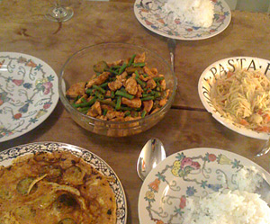

Rindfleisch mit grünen Bohnen (Pad Phet Tua Fak Jao)
5 von 6400 g Rindsgeschnetzeltes mit 2 EL Sojasauce sowie Pfeffer etwas 15 Min. ziehen lassen. 300 g Thaibohnen kurz blanchieren, abschrecken. RIndfleisch im Wok scharf anbraten, Hitze reduzieren. 2 EL rote Currypaste, Bohnen 2 EL Fischsauce und 3 EL Zucker hinzufügen, etwas einkochen. 5 Kaffir-Zitronenblätter In feinste Streifen geschnitten vor dem servieren darüber geben.
